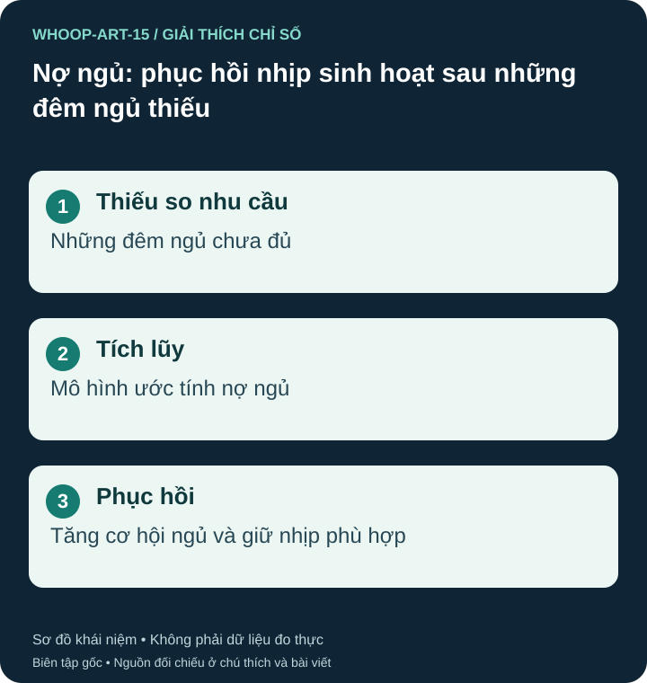

Nợ ngủ là gì?
Nợ ngủ mô tả phần ngủ thiếu tích lũy khi bạn thường xuyên ngủ ít hơn nhu cầu. Trên WHOOP, Sleep Debt là đầu ra mô hình dùng trong lập kế hoạch, không phải lượng thiếu hụt được xét nghiệm trực tiếp. Số đó có thể khác phép cộng đơn giản các giờ bạn tự cho là đã thiếu. S23 S24

Ngủ bù có giải quyết hết không?
Ngủ thêm khi có cơ hội có thể giúp dễ chịu và tỉnh táo hơn, nhưng không bảo đảm phục hồi ngay mọi chức năng. NHLBI lưu ý ngủ trưa không thay được toàn bộ lợi ích của ngủ đêm; ngủ trễ nhiều vào ngày nghỉ cũng có thể làm lịch ngủ lệch. S24
Ví dụ minh họa, nếu bạn cần khoảng tám giờ và chỉ ngủ sáu giờ trong ba đêm, phép tính đơn giản cho thấy sáu giờ thiếu. Đây là phép tính giáo dục, không phải công thức WHOOP và không có nghĩa chỉ cần ngủ thêm sáu giờ trong một đêm là giải quyết hoàn toàn.
Lập kế hoạch cho những ngày tiếp theo
Hãy xem lại giờ thức bắt buộc, dành khoảng ngủ đủ rộng và giảm những hoạt động thường đẩy giờ ngủ muộn. WHOOP Sleep Planner có thể gợi ý thời gian ngủ dựa trên mức nền, tải gần đây, nợ ngủ và ngủ trưa; coi đó là hướng dẫn có thể kiểm tra lại theo thực tế. S37
Theo dõi cả cảm giác buồn ngủ và hiệu suất ban ngày, thay vì chỉ chờ chỉ số về 0. Khi buồn ngủ, tránh lái xe hoặc công việc nguy hiểm. Nếu ngủ đủ cơ hội mà vẫn buồn ngủ rõ, hoặc mất ngủ khiến bạn liên tục không ngủ được, nên được đánh giá nguyên nhân thay vì chỉ tăng mục tiêu trong ứng dụng.
Nguồn tham khảo và phạm vi hỗ trợ
- S23 — WHOOP. Sleep Debt Explained: Impact, Causes, and Solutions. Phạm vi: Nợ ngủ theo mô hình WHOOP; hỗ trợ lập kế hoạch ngủ.
- S24 — NHLBI / NIH. Sleep Deprivation and Deficiency: How Much Sleep Is Enough. Phạm vi: Thiếu ngủ tích lũy; ngủ trưa có thể tăng tỉnh táo nhưng không thay toàn bộ lợi ích ngủ đêm.
- S37 — WHOOP. How Much Sleep Do You Need? Use WHOOP Sleep Planner. Phạm vi: Sleep Need gồm nền, Strain, nợ ngủ, ngủ trưa và hiệu chỉnh theo thói quen; công thức mô tả không phải mã thuật toán.
Bài biên soạn độc lập bởi Pulse & Vitality; tài liệu WHOOP và các nguồn khác được dùng để tham khảo. Đăng ngày 2026-10-27; nguồn đối chiếu 2026-10-26. Nội dung giáo dục, không thay thế đánh giá, chẩn đoán hoặc điều trị y tế.